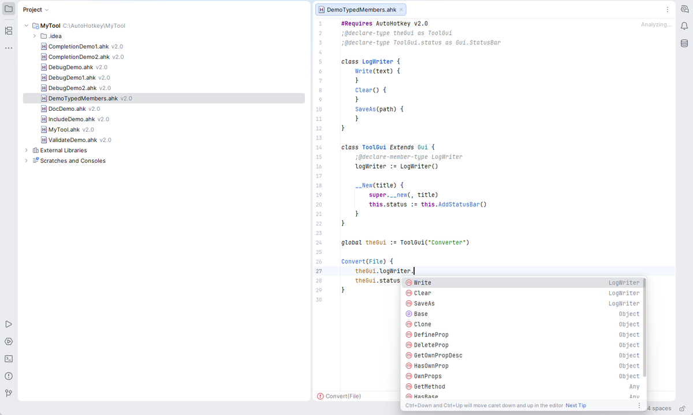

AutoHotkey decides the class of a value only when the script runs. In the editor the plugin therefore cannot know that win holds a Gui: after win. it would have to offer the members of every class. Pragmas tell the plugin the class:
ToolGui.status as Gui.StatusBar, see Members); ;@declare-member-type declares the class of a member right above its definition.Pragmas are comments for AutoHotkey; the script runs unchanged. A declaration applies to the whole file in which it stands, wherever it is placed, and never to other files.
| Feature | Without declaration | With ;@declare-type win as Gui |
|---|---|---|
Color of win | normal variable | Variable with declared type |
Completion after win. | members of all classes | members of Gui, Object, Any; those of Gui first |
Parameter info of win.Add( | Gui.Add, Menu.Add, Gui.ListView.Add ... | only Gui.Add |
Values for win.Add(" | values of all Add methods | control types of Gui.Add |
Help on Add in win.Add | list of all Add pages | page of Gui.Add |
Recommended for larger scripts: few global variables with a declared type, and typed members in their classes. The member declarations belong in the file of the class, anywhere in it, or ;@declare-member-type directly above the field; a library declares them once for every script that includes it.
;@declare-type theGui as ToolGui
;@declare-type ToolGui.status as Gui.StatusBar
class LogWriter {
Write(text) {
}
Clear() {
}
SaveAs(path) {
}
}
class ToolGui Extends Gui {
;@declare-member-type LogWriter
logWriter := LogWriter()
__New(title) {
super.__New(, title)
this.status := this.AddStatusBar() ; this. offers ToolGui and Gui
}
}
global theGui := ToolGui("Converter")
Convert(File) {
theGui.logWriter.| ; Write, Clear, SaveAs of LogWriter
theGui.status.SetText(File) ; members of Gui.StatusBar
}

theGui.logWriter. inside the function Convert: the methods of LogWriter first, then those of its base classes Object and Any.
A window with controls, declared by name and by suffix.
;@declare-type win as Gui, *Edit as Gui.Edit, *Btn as Gui.Button
win := Gui(, "Login")
userEdit := win.AddEdit("w200")
okBtn := win.AddButton("Default", "OK")
okBtn.OnEvent("Click", (*) => win.Hide()) ; OnEvent from Gui.Control
userEdit.Focus()
The same with automatic declarations for all Gui classes: every name ending with a class name gets that class.
;@declare-auto-type Gui* mainGui := Gui() nameEdit := mainGui.AddEdit() ; *Edit as Gui.Edit okButton := mainGui.AddButton() ; *Button as Gui.Button
An own class, also from an included file. The members of its base class are offered after its own members.
#Include queue.ahk ; defines: class Queue extends Array { Enqueue(item) ... }
;@declare-type jobs as Queue
jobs := Queue()
jobs.| ; Enqueue first, then Push, Pop, Length ... of Array
Prefix patterns for collections.
;@declare-type map* as Map, list* as Array
mapNames := Map()
listItems := []
mapNames.Has("x")
listItems.Push(1)
;@declare-auto-type) may also catch variables of other classes, e.g. *Gui a variable logGui that holds an own class.#Requires, so they are easy to find....Edit, ...Btn, one pattern covers all of them.Edit stays a built-in class name); declare the exact name for that.dt inserts ;@declare-type myVar as ClassName, dm inserts ;@declare-member-type ClassName; left unchanged, the placeholder ClassName gets the warning "Unknown class.".